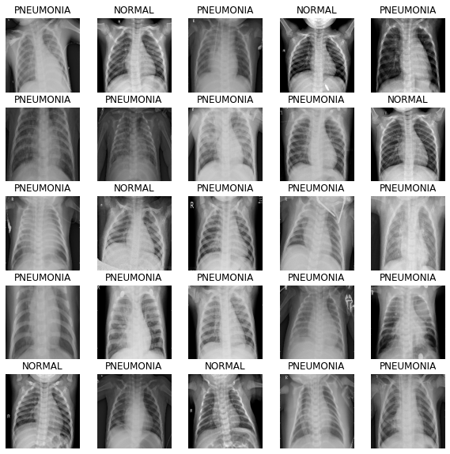
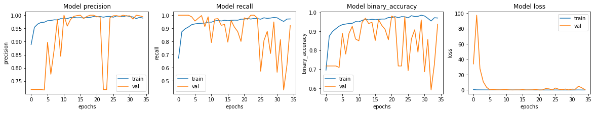
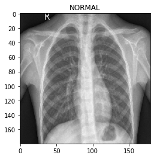

Pneumonia Classification on TPU
Author: Amy MiHyun Jang
Date created: 2020/07/28
Last modified: 2024/02/12
Description: Medical image classification on TPU.

Introduction + Set-up
This tutorial will explain how to build an X-ray image classification model to predict whether an X-ray scan shows presence of pneumonia.
import re
import os
import random
import numpy as np
import pandas as pd
import tensorflow as tf
import matplotlib.pyplot as plt
try:
tpu = tf.distribute.cluster_resolver.TPUClusterResolver.connect()
print("Device:", tpu.master())
strategy = tf.distribute.TPUStrategy(tpu)
except:
strategy = tf.distribute.get_strategy()
print("Number of replicas:", strategy.num_replicas_in_sync)
Device: grpc://10.0.27.122:8470
INFO:tensorflow:Initializing the TPU system: grpc://10.0.27.122:8470
INFO:tensorflow:Initializing the TPU system: grpc://10.0.27.122:8470
INFO:tensorflow:Clearing out eager caches
INFO:tensorflow:Clearing out eager caches
INFO:tensorflow:Finished initializing TPU system.
INFO:tensorflow:Finished initializing TPU system.
WARNING:absl:[`tf.distribute.TPUStrategy`](https://www.tensorflow.org/api_docs/python/tf/distribute/TPUStrategy) is deprecated, please use the non experimental symbol [`tf.distribute.TPUStrategy`](https://www.tensorflow.org/api_docs/python/tf/distribute/TPUStrategy) instead.
INFO:tensorflow:Found TPU system:
INFO:tensorflow:Found TPU system:
INFO:tensorflow:*** Num TPU Cores: 8
INFO:tensorflow:*** Num TPU Cores: 8
INFO:tensorflow:*** Num TPU Workers: 1
INFO:tensorflow:*** Num TPU Workers: 1
INFO:tensorflow:*** Num TPU Cores Per Worker: 8
INFO:tensorflow:*** Num TPU Cores Per Worker: 8
INFO:tensorflow:*** Available Device: _DeviceAttributes(/job:localhost/replica:0/task:0/device:CPU:0, CPU, 0, 0)
INFO:tensorflow:*** Available Device: _DeviceAttributes(/job:localhost/replica:0/task:0/device:CPU:0, CPU, 0, 0)
INFO:tensorflow:*** Available Device: _DeviceAttributes(/job:localhost/replica:0/task:0/device:XLA_CPU:0, XLA_CPU, 0, 0)
INFO:tensorflow:*** Available Device: _DeviceAttributes(/job:localhost/replica:0/task:0/device:XLA_CPU:0, XLA_CPU, 0, 0)
INFO:tensorflow:*** Available Device: _DeviceAttributes(/job:worker/replica:0/task:0/device:CPU:0, CPU, 0, 0)
INFO:tensorflow:*** Available Device: _DeviceAttributes(/job:worker/replica:0/task:0/device:CPU:0, CPU, 0, 0)
INFO:tensorflow:*** Available Device: _DeviceAttributes(/job:worker/replica:0/task:0/device:TPU:0, TPU, 0, 0)
INFO:tensorflow:*** Available Device: _DeviceAttributes(/job:worker/replica:0/task:0/device:TPU:0, TPU, 0, 0)
INFO:tensorflow:*** Available Device: _DeviceAttributes(/job:worker/replica:0/task:0/device:TPU:1, TPU, 0, 0)
INFO:tensorflow:*** Available Device: _DeviceAttributes(/job:worker/replica:0/task:0/device:TPU:1, TPU, 0, 0)
INFO:tensorflow:*** Available Device: _DeviceAttributes(/job:worker/replica:0/task:0/device:TPU:2, TPU, 0, 0)
INFO:tensorflow:*** Available Device: _DeviceAttributes(/job:worker/replica:0/task:0/device:TPU:2, TPU, 0, 0)
INFO:tensorflow:*** Available Device: _DeviceAttributes(/job:worker/replica:0/task:0/device:TPU:3, TPU, 0, 0)
INFO:tensorflow:*** Available Device: _DeviceAttributes(/job:worker/replica:0/task:0/device:TPU:3, TPU, 0, 0)
INFO:tensorflow:*** Available Device: _DeviceAttributes(/job:worker/replica:0/task:0/device:TPU:4, TPU, 0, 0)
INFO:tensorflow:*** Available Device: _DeviceAttributes(/job:worker/replica:0/task:0/device:TPU:4, TPU, 0, 0)
INFO:tensorflow:*** Available Device: _DeviceAttributes(/job:worker/replica:0/task:0/device:TPU:5, TPU, 0, 0)
INFO:tensorflow:*** Available Device: _DeviceAttributes(/job:worker/replica:0/task:0/device:TPU:5, TPU, 0, 0)
INFO:tensorflow:*** Available Device: _DeviceAttributes(/job:worker/replica:0/task:0/device:TPU:6, TPU, 0, 0)
INFO:tensorflow:*** Available Device: _DeviceAttributes(/job:worker/replica:0/task:0/device:TPU:6, TPU, 0, 0)
INFO:tensorflow:*** Available Device: _DeviceAttributes(/job:worker/replica:0/task:0/device:TPU:7, TPU, 0, 0)
INFO:tensorflow:*** Available Device: _DeviceAttributes(/job:worker/replica:0/task:0/device:TPU:7, TPU, 0, 0)
INFO:tensorflow:*** Available Device: _DeviceAttributes(/job:worker/replica:0/task:0/device:TPU_SYSTEM:0, TPU_SYSTEM, 0, 0)
INFO:tensorflow:*** Available Device: _DeviceAttributes(/job:worker/replica:0/task:0/device:TPU_SYSTEM:0, TPU_SYSTEM, 0, 0)
INFO:tensorflow:*** Available Device: _DeviceAttributes(/job:worker/replica:0/task:0/device:XLA_CPU:0, XLA_CPU, 0, 0)
INFO:tensorflow:*** Available Device: _DeviceAttributes(/job:worker/replica:0/task:0/device:XLA_CPU:0, XLA_CPU, 0, 0)
Number of replicas: 8
We need a Google Cloud link to our data to load the data using a TPU. Below, we define key configuration parameters we'll use in this example. To run on TPU, this example must be on Colab with the TPU runtime selected.
AUTOTUNE = tf.data.AUTOTUNE
BATCH_SIZE = 25 * strategy.num_replicas_in_sync
IMAGE_SIZE = [180, 180]
CLASS_NAMES = ["NORMAL", "PNEUMONIA"]
Load the data
The Chest X-ray data we are using from Cell divides the data into training and test files. Let's first load in the training TFRecords.
train_images = tf.data.TFRecordDataset(
"gs://download.tensorflow.org/data/ChestXRay2017/train/images.tfrec"
)
train_paths = tf.data.TFRecordDataset(
"gs://download.tensorflow.org/data/ChestXRay2017/train/paths.tfrec"
)
ds = tf.data.Dataset.zip((train_images, train_paths))
Let's count how many healthy/normal chest X-rays we have and how many pneumonia chest X-rays we have:
COUNT_NORMAL = len(
[
filename
for filename in train_paths
if "NORMAL" in filename.numpy().decode("utf-8")
]
)
print("Normal images count in training set: " + str(COUNT_NORMAL))
COUNT_PNEUMONIA = len(
[
filename
for filename in train_paths
if "PNEUMONIA" in filename.numpy().decode("utf-8")
]
)
print("Pneumonia images count in training set: " + str(COUNT_PNEUMONIA))
Normal images count in training set: 1349
Pneumonia images count in training set: 3883
Notice that there are way more images that are classified as pneumonia than normal. This shows that we have an imbalance in our data. We will correct for this imbalance later on in our notebook.
We want to map each filename to the corresponding (image, label) pair. The following methods will help us do that.
As we only have two labels, we will encode the label so that 1 or True indicates
pneumonia and 0 or False indicates normal.
def get_label(file_path):
# convert the path to a list of path components
parts = tf.strings.split(file_path, "/")
# The second to last is the class-directory
if parts[-2] == "PNEUMONIA":
return 1
else:
return 0
def decode_img(img):
# convert the compressed string to a 3D uint8 tensor
img = tf.image.decode_jpeg(img, channels=3)
# resize the image to the desired size.
return tf.image.resize(img, IMAGE_SIZE)
def process_path(image, path):
label = get_label(path)
# load the raw data from the file as a string
img = decode_img(image)
return img, label
ds = ds.map(process_path, num_parallel_calls=AUTOTUNE)
Let's split the data into a training and validation datasets.
ds = ds.shuffle(10000)
train_ds = ds.take(4200)
val_ds = ds.skip(4200)
Let's visualize the shape of an (image, label) pair.
for image, label in train_ds.take(1):
print("Image shape: ", image.numpy().shape)
print("Label: ", label.numpy())
Image shape: (180, 180, 3)
Label: False
Load and format the test data as well.
test_images = tf.data.TFRecordDataset(
"gs://download.tensorflow.org/data/ChestXRay2017/test/images.tfrec"
)
test_paths = tf.data.TFRecordDataset(
"gs://download.tensorflow.org/data/ChestXRay2017/test/paths.tfrec"
)
test_ds = tf.data.Dataset.zip((test_images, test_paths))
test_ds = test_ds.map(process_path, num_parallel_calls=AUTOTUNE)
test_ds = test_ds.batch(BATCH_SIZE)
Visualize the dataset
First, let's use buffered prefetching so we can yield data from disk without having I/O become blocking.
Please note that large image datasets should not be cached in memory. We do it here because the dataset is not very large and we want to train on TPU.
def prepare_for_training(ds, cache=True):
# This is a small dataset, only load it once, and keep it in memory.
# use `.cache(filename)` to cache preprocessing work for datasets that don't
# fit in memory.
if cache:
if isinstance(cache, str):
ds = ds.cache(cache)
else:
ds = ds.cache()
ds = ds.batch(BATCH_SIZE)
# `prefetch` lets the dataset fetch batches in the background while the model
# is training.
ds = ds.prefetch(buffer_size=AUTOTUNE)
return ds
Call the next batch iteration of the training data.
train_ds = prepare_for_training(train_ds)
val_ds = prepare_for_training(val_ds)
image_batch, label_batch = next(iter(train_ds))
Define the method to show the images in the batch.
def show_batch(image_batch, label_batch):
plt.figure(figsize=(10, 10))
for n in range(25):
ax = plt.subplot(5, 5, n + 1)
plt.imshow(image_batch[n] / 255)
if label_batch[n]:
plt.title("PNEUMONIA")
else:
plt.title("NORMAL")
plt.axis("off")
As the method takes in NumPy arrays as its parameters, call the numpy function on the batches to return the tensor in NumPy array form.
show_batch(image_batch.numpy(), label_batch.numpy())

Build the CNN
To make our model more modular and easier to understand, let's define some blocks. As we're building a convolution neural network, we'll create a convolution block and a dense layer block.
The architecture for this CNN has been inspired by this article.
import os
os.environ['KERAS_BACKEND'] = 'tensorflow'
import keras
from keras import layers
def conv_block(filters, inputs):
x = layers.SeparableConv2D(filters, 3, activation="relu", padding="same")(inputs)
x = layers.SeparableConv2D(filters, 3, activation="relu", padding="same")(x)
x = layers.BatchNormalization()(x)
outputs = layers.MaxPool2D()(x)
return outputs
def dense_block(units, dropout_rate, inputs):
x = layers.Dense(units, activation="relu")(inputs)
x = layers.BatchNormalization()(x)
outputs = layers.Dropout(dropout_rate)(x)
return outputs
The following method will define the function to build our model for us.
The images originally have values that range from [0, 255]. CNNs work better with smaller numbers so we will scale this down for our input.
The Dropout layers are important, as they
reduce the likelikhood of the model overfitting. We want to end the model with a Dense
layer with one node, as this will be the binary output that determines if an X-ray shows
presence of pneumonia.
def build_model():
inputs = keras.Input(shape=(IMAGE_SIZE[0], IMAGE_SIZE[1], 3))
x = layers.Rescaling(1.0 / 255)(inputs)
x = layers.Conv2D(16, 3, activation="relu", padding="same")(x)
x = layers.Conv2D(16, 3, activation="relu", padding="same")(x)
x = layers.MaxPool2D()(x)
x = conv_block(32, x)
x = conv_block(64, x)
x = conv_block(128, x)
x = layers.Dropout(0.2)(x)
x = conv_block(256, x)
x = layers.Dropout(0.2)(x)
x = layers.Flatten()(x)
x = dense_block(512, 0.7, x)
x = dense_block(128, 0.5, x)
x = dense_block(64, 0.3, x)
outputs = layers.Dense(1, activation="sigmoid")(x)
model = keras.Model(inputs=inputs, outputs=outputs)
return model
Correct for data imbalance
We saw earlier in this example that the data was imbalanced, with more images classified as pneumonia than normal. We will correct for that by using class weighting:
initial_bias = np.log([COUNT_PNEUMONIA / COUNT_NORMAL])
print("Initial bias: {:.5f}".format(initial_bias[0]))
TRAIN_IMG_COUNT = COUNT_NORMAL + COUNT_PNEUMONIA
weight_for_0 = (1 / COUNT_NORMAL) * (TRAIN_IMG_COUNT) / 2.0
weight_for_1 = (1 / COUNT_PNEUMONIA) * (TRAIN_IMG_COUNT) / 2.0
class_weight = {0: weight_for_0, 1: weight_for_1}
print("Weight for class 0: {:.2f}".format(weight_for_0))
print("Weight for class 1: {:.2f}".format(weight_for_1))
Initial bias: 1.05724
Weight for class 0: 1.94
Weight for class 1: 0.67
The weight for class 0 (Normal) is a lot higher than the weight for class 1
(Pneumonia). Because there are less normal images, each normal image will be weighted
more to balance the data as the CNN works best when the training data is balanced.
Train the model
Defining callbacks
The checkpoint callback saves the best weights of the model, so next time we want to use the model, we do not have to spend time training it. The early stopping callback stops the training process when the model starts becoming stagnant, or even worse, when the model starts overfitting.
checkpoint_cb = keras.callbacks.ModelCheckpoint("xray_model.keras", save_best_only=True)
early_stopping_cb = keras.callbacks.EarlyStopping(
patience=10, restore_best_weights=True
)
We also want to tune our learning rate. Too high of a learning rate will cause the model to diverge. Too small of a learning rate will cause the model to be too slow. We implement the exponential learning rate scheduling method below.
initial_learning_rate = 0.015
lr_schedule = keras.optimizers.schedules.ExponentialDecay(
initial_learning_rate, decay_steps=100000, decay_rate=0.96, staircase=True
)
Fit the model
For our metrics, we want to include precision and recall as they will provide use with a more informed picture of how good our model is. Accuracy tells us what fraction of the labels is correct. Since our data is not balanced, accuracy might give a skewed sense of a good model (i.e. a model that always predicts PNEUMONIA will be 74% accurate but is not a good model).
Precision is the number of true positives (TP) over the sum of TP and false positives (FP). It shows what fraction of labeled positives are actually correct.
Recall is the number of TP over the sum of TP and false negatves (FN). It shows what fraction of actual positives are correct.
Since there are only two possible labels for the image, we will be using the binary crossentropy loss. When we fit the model, remember to specify the class weights, which we defined earlier. Because we are using a TPU, training will be quick - less than 2 minutes.
with strategy.scope():
model = build_model()
METRICS = [
keras.metrics.BinaryAccuracy(),
keras.metrics.Precision(name="precision"),
keras.metrics.Recall(name="recall"),
]
model.compile(
optimizer=keras.optimizers.Adam(learning_rate=lr_schedule),
loss="binary_crossentropy",
metrics=METRICS,
)
history = model.fit(
train_ds,
epochs=100,
validation_data=val_ds,
class_weight=class_weight,
callbacks=[checkpoint_cb, early_stopping_cb],
)
Epoch 1/100
WARNING:tensorflow:From /usr/local/lib/python3.6/dist-packages/tensorflow/python/data/ops/multi_device_iterator_ops.py:601: get_next_as_optional (from tensorflow.python.data.ops.iterator_ops) is deprecated and will be removed in a future version.
Instructions for updating:
Use `tf.data.Iterator.get_next_as_optional()` instead.
WARNING:tensorflow:From /usr/local/lib/python3.6/dist-packages/tensorflow/python/data/ops/multi_device_iterator_ops.py:601: get_next_as_optional (from tensorflow.python.data.ops.iterator_ops) is deprecated and will be removed in a future version.
Instructions for updating:
Use `tf.data.Iterator.get_next_as_optional()` instead.
21/21 [==============================] - 12s 568ms/step - loss: 0.5857 - binary_accuracy: 0.6960 - precision: 0.8887 - recall: 0.6733 - val_loss: 34.0149 - val_binary_accuracy: 0.7180 - val_precision: 0.7180 - val_recall: 1.0000
Epoch 2/100
21/21 [==============================] - 3s 128ms/step - loss: 0.2916 - binary_accuracy: 0.8755 - precision: 0.9540 - recall: 0.8738 - val_loss: 97.5194 - val_binary_accuracy: 0.7180 - val_precision: 0.7180 - val_recall: 1.0000
Epoch 3/100
21/21 [==============================] - 4s 167ms/step - loss: 0.2384 - binary_accuracy: 0.9002 - precision: 0.9663 - recall: 0.8964 - val_loss: 27.7902 - val_binary_accuracy: 0.7180 - val_precision: 0.7180 - val_recall: 1.0000
Epoch 4/100
21/21 [==============================] - 4s 173ms/step - loss: 0.2046 - binary_accuracy: 0.9145 - precision: 0.9725 - recall: 0.9102 - val_loss: 10.8302 - val_binary_accuracy: 0.7180 - val_precision: 0.7180 - val_recall: 1.0000
Epoch 5/100
21/21 [==============================] - 4s 174ms/step - loss: 0.1841 - binary_accuracy: 0.9279 - precision: 0.9733 - recall: 0.9279 - val_loss: 3.5860 - val_binary_accuracy: 0.7103 - val_precision: 0.7162 - val_recall: 0.9879
Epoch 6/100
21/21 [==============================] - 4s 185ms/step - loss: 0.1600 - binary_accuracy: 0.9362 - precision: 0.9791 - recall: 0.9337 - val_loss: 0.3014 - val_binary_accuracy: 0.8895 - val_precision: 0.8973 - val_recall: 0.9555
Epoch 7/100
21/21 [==============================] - 3s 130ms/step - loss: 0.1567 - binary_accuracy: 0.9393 - precision: 0.9798 - recall: 0.9372 - val_loss: 0.6763 - val_binary_accuracy: 0.7810 - val_precision: 0.7760 - val_recall: 0.9771
Epoch 8/100
21/21 [==============================] - 3s 131ms/step - loss: 0.1532 - binary_accuracy: 0.9421 - precision: 0.9825 - recall: 0.9385 - val_loss: 0.3169 - val_binary_accuracy: 0.8895 - val_precision: 0.8684 - val_recall: 0.9973
Epoch 9/100
21/21 [==============================] - 4s 184ms/step - loss: 0.1457 - binary_accuracy: 0.9431 - precision: 0.9822 - recall: 0.9401 - val_loss: 0.2064 - val_binary_accuracy: 0.9273 - val_precision: 0.9840 - val_recall: 0.9136
Epoch 10/100
21/21 [==============================] - 3s 132ms/step - loss: 0.1201 - binary_accuracy: 0.9521 - precision: 0.9869 - recall: 0.9479 - val_loss: 0.4364 - val_binary_accuracy: 0.8605 - val_precision: 0.8443 - val_recall: 0.9879
Epoch 11/100
21/21 [==============================] - 3s 127ms/step - loss: 0.1200 - binary_accuracy: 0.9510 - precision: 0.9863 - recall: 0.9469 - val_loss: 0.5197 - val_binary_accuracy: 0.8508 - val_precision: 1.0000 - val_recall: 0.7922
Epoch 12/100
21/21 [==============================] - 4s 186ms/step - loss: 0.1077 - binary_accuracy: 0.9581 - precision: 0.9870 - recall: 0.9559 - val_loss: 0.1349 - val_binary_accuracy: 0.9486 - val_precision: 0.9587 - val_recall: 0.9703
Epoch 13/100
21/21 [==============================] - 4s 173ms/step - loss: 0.0918 - binary_accuracy: 0.9650 - precision: 0.9914 - recall: 0.9611 - val_loss: 0.0926 - val_binary_accuracy: 0.9700 - val_precision: 0.9837 - val_recall: 0.9744
Epoch 14/100
21/21 [==============================] - 3s 130ms/step - loss: 0.0996 - binary_accuracy: 0.9612 - precision: 0.9913 - recall: 0.9559 - val_loss: 0.1811 - val_binary_accuracy: 0.9419 - val_precision: 0.9956 - val_recall: 0.9231
Epoch 15/100
21/21 [==============================] - 3s 129ms/step - loss: 0.0898 - binary_accuracy: 0.9643 - precision: 0.9901 - recall: 0.9614 - val_loss: 0.1525 - val_binary_accuracy: 0.9486 - val_precision: 0.9986 - val_recall: 0.9298
Epoch 16/100
21/21 [==============================] - 3s 128ms/step - loss: 0.0941 - binary_accuracy: 0.9621 - precision: 0.9904 - recall: 0.9582 - val_loss: 0.5101 - val_binary_accuracy: 0.8527 - val_precision: 1.0000 - val_recall: 0.7949
Epoch 17/100
21/21 [==============================] - 3s 125ms/step - loss: 0.0798 - binary_accuracy: 0.9636 - precision: 0.9897 - recall: 0.9607 - val_loss: 0.1239 - val_binary_accuracy: 0.9622 - val_precision: 0.9875 - val_recall: 0.9595
Epoch 18/100
21/21 [==============================] - 3s 126ms/step - loss: 0.0821 - binary_accuracy: 0.9657 - precision: 0.9911 - recall: 0.9623 - val_loss: 0.1597 - val_binary_accuracy: 0.9322 - val_precision: 0.9956 - val_recall: 0.9096
Epoch 19/100
21/21 [==============================] - 3s 143ms/step - loss: 0.0800 - binary_accuracy: 0.9657 - precision: 0.9917 - recall: 0.9617 - val_loss: 0.2538 - val_binary_accuracy: 0.9109 - val_precision: 1.0000 - val_recall: 0.8758
Epoch 20/100
21/21 [==============================] - 3s 127ms/step - loss: 0.0605 - binary_accuracy: 0.9738 - precision: 0.9950 - recall: 0.9694 - val_loss: 0.6594 - val_binary_accuracy: 0.8566 - val_precision: 1.0000 - val_recall: 0.8003
Epoch 21/100
21/21 [==============================] - 4s 167ms/step - loss: 0.0726 - binary_accuracy: 0.9733 - precision: 0.9937 - recall: 0.9701 - val_loss: 0.0593 - val_binary_accuracy: 0.9816 - val_precision: 0.9945 - val_recall: 0.9798
Epoch 22/100
21/21 [==============================] - 3s 126ms/step - loss: 0.0577 - binary_accuracy: 0.9783 - precision: 0.9951 - recall: 0.9755 - val_loss: 0.1087 - val_binary_accuracy: 0.9729 - val_precision: 0.9931 - val_recall: 0.9690
Epoch 23/100
21/21 [==============================] - 3s 125ms/step - loss: 0.0652 - binary_accuracy: 0.9729 - precision: 0.9924 - recall: 0.9707 - val_loss: 1.8465 - val_binary_accuracy: 0.7180 - val_precision: 0.7180 - val_recall: 1.0000
Epoch 24/100
21/21 [==============================] - 3s 124ms/step - loss: 0.0538 - binary_accuracy: 0.9783 - precision: 0.9951 - recall: 0.9755 - val_loss: 1.5769 - val_binary_accuracy: 0.7180 - val_precision: 0.7180 - val_recall: 1.0000
Epoch 25/100
21/21 [==============================] - 4s 167ms/step - loss: 0.0549 - binary_accuracy: 0.9776 - precision: 0.9954 - recall: 0.9743 - val_loss: 0.0590 - val_binary_accuracy: 0.9777 - val_precision: 0.9904 - val_recall: 0.9784
Epoch 26/100
21/21 [==============================] - 3s 131ms/step - loss: 0.0677 - binary_accuracy: 0.9719 - precision: 0.9924 - recall: 0.9694 - val_loss: 2.6008 - val_binary_accuracy: 0.6928 - val_precision: 0.9977 - val_recall: 0.5735
Epoch 27/100
21/21 [==============================] - 3s 127ms/step - loss: 0.0469 - binary_accuracy: 0.9833 - precision: 0.9971 - recall: 0.9804 - val_loss: 1.0184 - val_binary_accuracy: 0.8605 - val_precision: 0.9983 - val_recall: 0.8070
Epoch 28/100
21/21 [==============================] - 3s 126ms/step - loss: 0.0501 - binary_accuracy: 0.9790 - precision: 0.9961 - recall: 0.9755 - val_loss: 0.3737 - val_binary_accuracy: 0.9089 - val_precision: 0.9954 - val_recall: 0.8772
Epoch 29/100
21/21 [==============================] - 3s 128ms/step - loss: 0.0548 - binary_accuracy: 0.9798 - precision: 0.9941 - recall: 0.9784 - val_loss: 1.2928 - val_binary_accuracy: 0.7907 - val_precision: 1.0000 - val_recall: 0.7085
Epoch 30/100
21/21 [==============================] - 3s 129ms/step - loss: 0.0370 - binary_accuracy: 0.9860 - precision: 0.9980 - recall: 0.9829 - val_loss: 0.1370 - val_binary_accuracy: 0.9612 - val_precision: 0.9972 - val_recall: 0.9487
Epoch 31/100
21/21 [==============================] - 3s 125ms/step - loss: 0.0585 - binary_accuracy: 0.9819 - precision: 0.9951 - recall: 0.9804 - val_loss: 1.1955 - val_binary_accuracy: 0.6870 - val_precision: 0.9976 - val_recall: 0.5655
Epoch 32/100
21/21 [==============================] - 3s 140ms/step - loss: 0.0813 - binary_accuracy: 0.9695 - precision: 0.9934 - recall: 0.9652 - val_loss: 1.0394 - val_binary_accuracy: 0.8576 - val_precision: 0.9853 - val_recall: 0.8138
Epoch 33/100
21/21 [==============================] - 3s 128ms/step - loss: 0.1111 - binary_accuracy: 0.9555 - precision: 0.9870 - recall: 0.9524 - val_loss: 4.9438 - val_binary_accuracy: 0.5911 - val_precision: 1.0000 - val_recall: 0.4305
Epoch 34/100
21/21 [==============================] - 3s 130ms/step - loss: 0.0680 - binary_accuracy: 0.9726 - precision: 0.9921 - recall: 0.9707 - val_loss: 2.8822 - val_binary_accuracy: 0.7267 - val_precision: 0.9978 - val_recall: 0.6208
Epoch 35/100
21/21 [==============================] - 4s 187ms/step - loss: 0.0784 - binary_accuracy: 0.9712 - precision: 0.9892 - recall: 0.9717 - val_loss: 0.3940 - val_binary_accuracy: 0.9390 - val_precision: 0.9942 - val_recall: 0.9204
Visualizing model performance
Let's plot the model accuracy and loss for the training and the validating set. Note that no random seed is specified for this notebook. For your notebook, there might be slight variance.
fig, ax = plt.subplots(1, 4, figsize=(20, 3))
ax = ax.ravel()
for i, met in enumerate(["precision", "recall", "binary_accuracy", "loss"]):
ax[i].plot(history.history[met])
ax[i].plot(history.history["val_" + met])
ax[i].set_title("Model {}".format(met))
ax[i].set_xlabel("epochs")
ax[i].set_ylabel(met)
ax[i].legend(["train", "val"])

We see that the accuracy for our model is around 95%.
Predict and evaluate results
Let's evaluate the model on our test data!
model.evaluate(test_ds, return_dict=True)
4/4 [==============================] - 3s 708ms/step - loss: 0.9718 - binary_accuracy: 0.7901 - precision: 0.7524 - recall: 0.9897
{'binary_accuracy': 0.7900640964508057,
'loss': 0.9717951416969299,
'precision': 0.752436637878418,
'recall': 0.9897436499595642}
We see that our accuracy on our test data is lower than the accuracy for our validating set. This may indicate overfitting.
Our recall is greater than our precision, indicating that almost all pneumonia images are correctly identified but some normal images are falsely identified. We should aim to increase our precision.
for image, label in test_ds.take(1):
plt.imshow(image[0] / 255.0)
plt.title(CLASS_NAMES[label[0].numpy()])
prediction = model.predict(test_ds.take(1))[0]
scores = [1 - prediction, prediction]
for score, name in zip(scores, CLASS_NAMES):
print("This image is %.2f percent %s" % ((100 * score), name))
/usr/local/lib/python3.6/dist-packages/ipykernel_launcher.py:3: DeprecationWarning: In future, it will be an error for 'np.bool_' scalars to be interpreted as an index
This is separate from the ipykernel package so we can avoid doing imports until
This image is 47.19 percent NORMAL
This image is 52.81 percent PNEUMONIA
